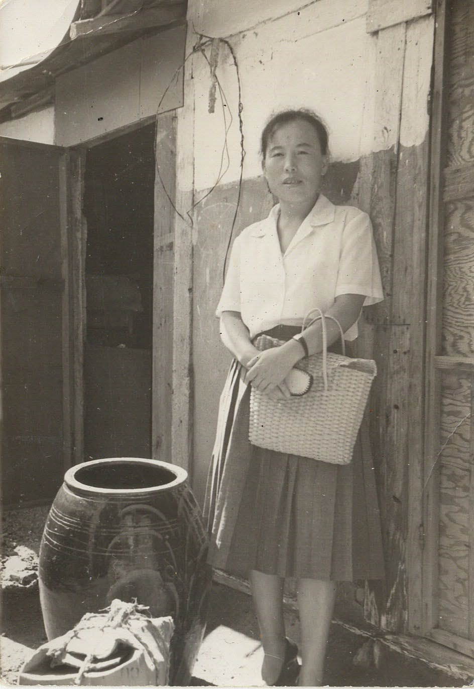

There are times, during the summer, when holidays seem to run together.
Each year the meaning and purpose for the celebration seem less clear.
Father’s Day is one of those.
According to Wikipedia, Father’s Day1 is
… a holiday honoring one’s father, or relevant father figure, as well as fatherhood, paternal bonds, and the influence of fathers in society.
A Physical, Yearly Gift
At the entrance to the church meeting hall, there were beautifully wrapped 6” cookies for all the fathers.
There were several scores of cookies on display
The individual that made these used a lot ingredients and took a long time to bake these.
A store bought cookies would have sufficed but the effort was certainly appreciated.
Thank you Sister S., the RS President
Receiving gift always improves one’s outlook on life.
Then came the spiritual gift from Sister H.
A Spiritual Gift
She didn’t grow up with a father, since her parents divorced when she was 3.
Her mother remarried when Sister H was a teenager.
During those years, her father figure was her grandfather.
She described a time when her grandfather went to a function that would be attended by fathers and daughters.
She described her giving a talk about fathers as a blind person explaining an art work.
But she talked to a number of her friends, not just one or two, to gather a set of traits of fathers.
Those traits that are manifested in our earthly father but those also reflects our celestial heritage.
Fathers,
are to provide, including safety.
are there, their presence is important
are examples of long-suffering and are patient
have a perfect love for the children
teaches about the divine nature
don’t judge
just love those around him
don’t talk about Jesus, but be like Jesus
Listening to these traits, I recognized that I have failed to grasp many of these, especially the last one about …be like Jesus
However, my father in his own way and throughout 6 decades, exemplified many if not all of these traits.
Thank you dad.
A Generational Gift
Back in the mid 1980s, Brother L. gave a talk as part of a ward Christmas devotional, at Carrollton, Maryland.
I was a newly returned missionary at the time, home from school.
My world view consisted of information filtered through TV news, radio broadcasts, and the Washington Post. And what we discussed and lived as an immigrant family.
My father was in his 50s.
I didn’t fully understand nor appreciate the impact of what Brother L. was saying.
Brother L. had far greater access to information and trends as a University Professor.
I don’t recall all of the supporting evidence he presented but he mentioned,
Fathers are an endangered group in the United States of America.
A Steady Foundation
Since then I have reflected on his observations.
I have a far greater appreciation for his message.
And for my own father.
He espoused and demonstrated the role and the traits of the father .
For many years my father worked in a hazardous environment.
But I don’t recall him complaining or wishing that he had a different role.
I think he was happy to provide for the family.
At the same time wishing that we realized a better living condition for ourselves and our children.
Thank you Sisters S and H for the cookies and the Father’s Day message.
Thank you Brother L. for planting a thought that kept me thinking all these years.
Thank you Dad for providing all the earthly goods and means for our success.
For demonstrating Father’s traits and emulating the One.

Events, gestures, and a remembrance made me realize that remembering our fathers, relevant father figures, paternal bonds, and fatherhood is still important and should be celebrated more often.
It is a society’s way of remembering and celebrating ones that nurtured and guided us, by setting aside a special day.
However, whenever we pause and remember them and renew our dedication for this life, we are celebrating and remembering our mothers and fathers.
Looking forward to the coming days and to next year’s celebration of both Mother’s Day, Father’s Day and all the other summer holidays.
Footnotes
https://en.wikipedia.org/wiki/Father%27s_Day↩︎